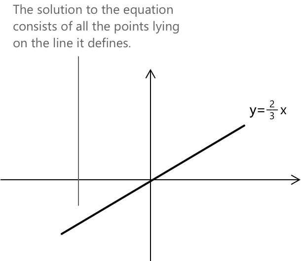

Лінійні рівняння
Що таке лінійні рівняння?
Лінійні рівняння описують зв'язок між змінними лінійно. Ці рівняння вважаються найпростішою формою рівнянь, що включають додавання, віднімання та множення. Стандартна форма має вигляд:
\[a_1x_1 + a_2x_2 + \ldots + a_nx_n = b \]
- \(x_1, x_2, \ldots, x_n \in \mathbb{R} \) — це змінні.
- \(a_1, a_2, \ldots, a_n \in \mathbb{R} \) — це коефіцієнти: принаймні один коефіцієнт \( a_i \) має бути ненульовим.
- \(b \in \mathbb{R} \) — це стала частина.
- Коли стала частина \(b\) дорівнює нулю, лінійне рівняння називається однорідним.
Лінійні рівняння, загалом, можуть містити більше однієї змінної. Наприклад, рівняння \( ax + by + c = 0 \) є лінійним рівнянням з двома змінними \(x\) та \(y\).
Лінійні рівняння є основою систем рівнянь та матричних операцій, які дозволяють нам вивчати та розв'язувати кілька рівнянь одночасно структурованим та ефективним способом. Ці теми детальніше розглянуті у відповідних розділах Algebrica: Системи лінійних рівнянь та Матриці.
Тип розв'язання
Геометрично тип розв'язання лінійного рівняння залежить від кількості змінних.
- З однією змінною розв'язанням є одна точка на числовій прямій.
- З двома змінними це пряма на площині.
- З трьома змінними це стає площиною в просторі.
- З більше ніж трьома змінними це визначає так звану гіперплощину у вищих вимірах.
Лінійні рівняння з однією змінною
Лінійне рівняння з однією змінною можна представити у вигляді \(ax = b\), яке має єдиний розв'язок, що визначається як:
\[x= \frac{b}{a} \]
Важливо зауважити, що оскільки за означенням \( a \neq 0 \), таке лінійне рівняння завжди має один і тільки один розв'язок.
У деяких випадках коефіцієнти лінійного рівняння не є фіксованими сталими, а залежать від одного або кількох дійсних параметрів. Це призводить до так званих лінійних рівнянь з параметрами, де поведінка рівняння змінюється залежно від значення, присвоєного параметру.
Зміна параметра може перетворити рівняння на звичайний лінійний зв'язок з єдиним розв'язком, але також може створити особливі ситуації, за яких рівняння стає тотожністю або перетворюється на суперечність.
Розв'язування рівнянь першого ступеня з однією змінною може бути простим. Якщо початкове рівняння вже перебуває у стандартній формі, процес зазвичай включає серію кроків для ізоляції змінної та виконання необхідних обчислень.
Приклад 1
Розв'яжіть рівняння \(2x + 3 = 11x\).
Як перший крок, ми привели рівняння до стандартної форми. У цьому випадку немає обмежень на значення \(x\), яке існує в усій області визначення дійсних чисел \(x \in \mathbb{R}\). Виконуючи обчислення, ми отримаємо:
\begin{align*} 2x + 3 &= 11x \\[0.6em] 2x – 11x &= -3 \\[0.6em] -9x &= -3 \\[0.6em] x &= \frac{3}{9} \\[0.6em] x &= \frac{1}{3} \end{align*}
Підстановка значення \(x = \large{\frac{1}{3} }\) у початкове рівняння є вирішальною для забезпечення точності розв'язання. На основі виконаних обчислень остання рівність дійсно підтверджується.
\begin{align*} 2\left(\frac{1}{3}\right) + 3 &= 11\left(\frac{1}{3}\right)\\[0.6em] \frac{2}{3} + 3 &= \frac{11}{3} \\[0.6em] \frac{2}{3} + \frac{9}{3} &= \frac{11}{3} \\[0.6em] \frac{11}{3} &= \frac{11}{3} \\[0.6em] \end{align*}
Розв'язанням рівняння є:
\[ x = \frac{1}{3} \]
Лінійні рівняння з двома змінними
Коли лінійне рівняння містить дві змінні, а стала частина дорівнює нулю, наприклад \( ax + by = 0 \), ми маємо однорідне лінійне рівняння. Такий тип рівняння має нескінченну кількість розв'язків, оскільки існує нескінченна кількість пар \((x, y)\), що задовольняють умову. Загальний розв'язок можна представити як:
\[ x = \lambda b, \quad y = -\lambda a \]
де \( \lambda \) — параметр \(\in \mathbb{R}\). Кожне значення \( \lambda \) генерує точку на прямій, визначеній рівнянням, що означає, що всі розв'язки лежать на прямій, що проходить через початок координат.
Приклад 2
Розглянемо однорідне лінійне рівняння: \[ 2x - 3y = 0 \]
Це лінійне рівняння з двома змінними, де вільний член дорівнює нулю. Воно представляє пряму, що проходить через початок координат. Щоб знайти загальний розв'язок, ми можемо виразити одну змінну через іншу. Виразимо \( y \):
\[ 2x = 3y \quad \rightarrow \quad y = \frac{2}{3}x \]
Це показує, що кожен розв'язок \((x, y)\) задовольняє цей зв'язок. Ми також можемо описати всі розв'язки, використовуючи параметр \( \lambda \in \mathbb{R} \): \[ x = \lambda \quad y = \frac{2}{3} \lambda \]

Тепер ми можемо взяти довільні значення \( \lambda \), наприклад \( \lambda = 3 \) та \( \lambda = -6 \) (але це може бути будь-яке дійсне число). Отримаємо:
- Для \( \lambda = 3 \), маємо \( x = 3 \), \( y = 2 \)
- Для \( \lambda = -6 \), маємо \( x = -6 \), \( y = -4 \)
Розв'язком рівняння \( 2x - 3y = 0 \) є множина всіх точок \((x, y)\), що лежать на прямій, визначеній рівнянням:
\[ y = \frac{2}{3}x \]
Лінійні рівняння з трьома змінними
Коли лінійне рівняння містить три змінні, наприклад \(ax + by + cz = 0\), ми маємо однорідне лінійне рівняння з трьома змінними. Його розв'язки утворюють площину в тривимірному просторі, що проходить через початок координат. Існує безліч розв'язків, оскільки існує безліч трійок \((x, y, z)\), що задовольняють рівняння.
Загальний розв'язок можна записати в параметричній формі, обравши два параметри, наприклад \( \lambda \) та \( \mu \). Одним із можливих варіантів є: \[ x = \lambda, \quad y = \mu, \quad z = -\frac{a\lambda + b\mu}{c} \] де \( \lambda, \mu \in \mathbb{R} \) та \( c \neq 0 \). Кожна пара \((\lambda, \mu)\) дає точку на площині. Усі розв'язки разом утворюють площину, що проходить через початок координат.
Приклад 3
Розглянемо рівняння: \[ x + 2y – z = 0 \]
Виділимо \( z \): \[ z = x + 2y \]
Тепер призначимо параметри для \( x \) та \( y \): \[ x = \lambda, \quad y = \mu \]
Тоді: \[ z = \lambda + 2\mu \]
Розв'язком рівняння \( x + 2y - z = 0 \) є множина всіх точок \((x, y, z)\) вигляду: \[ (x, y, z) = (\lambda, \mu, \lambda + 2\mu) \quad \text{де} \quad \lambda, \mu \in \mathbb{R} \]
Лінійні рівняння з параметром
Природним розширенням вивчення лінійних рівнянь є дослідження того, що відбувається, коли коефіцієнти не є фіксованими числами, а залежать від одного або кількох дійсних параметрів. У цьому контексті ми говоримо про лінійні рівняння з параметром, сімейство відношень вигляду
\[ a(k)x + b(k) = c(k) \]
поведінка яких змінюється залежно від обраного значення параметра. Залежно від того, як взаємодіють функції \(a(k)\), \(b(k)\) та \(c(k)\), рівняння може мати єдиний розв'язок, стати тотожністю, правильною для будь-якого дійсного \(x\), або перетворитися на суперечність, що не має розв'язків.